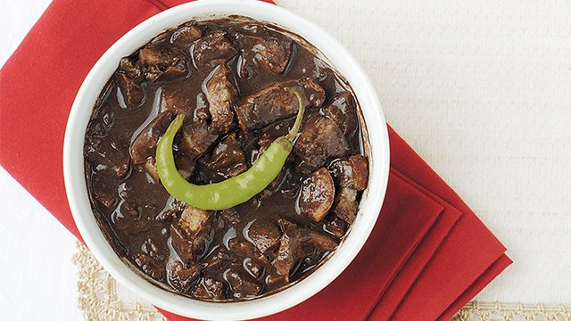

Dinuguan

Description
Dinuguan is a filipino dish
One of the ingredients of this dish is blood
Ingredients
- 2 lbs. pork shoulder, cubed – This cut of meat has the right amount of fat and muscle, making it perfect for slow cooking. The fat melts during cooking, adding richness to the stew.
- 1 1/4 cups pork blood – Gives the stew its unique flavor and dark color. Dinuguan isn’t complete without pork blood. If it’s your first time, don’t worry! Our recipe ensures the blood is thoroughly cooked, making it delicious and not as intimidating as you might think.
- 4 pieces long peppers – Add a mild heat to the dish. There’s something special about dinuguan with long peppers; their taste balances the savory flavor perfectly.
- 2 pieces onion, chopped – I love to use more onions because they enhance the dish’s flavor. It’s best to mince the onions and cook them until they become soft and start to caramelize.
- 6 cloves garlic, minced – Adds a strong, aromatic flavor.
- 2 cups water – This is used to create the stew’s base. Too much water can make this dinuguan unappealing and too runny. We aim for a consistency that is slightly thick but not overly so.
- ¾ cup white vinegar – Adds a tangy flavor and helps tenderize the meat. It also prevents the dinuguan from becoming too coagulated.
- 3 pieces dried bay leaves – Bay leaves add a subtle, herbal flavor.
- 3 tablespoons cooking oil – Used for sautéing the ingredients.
- 1 tablespoon granulated white sugar –1 Balances the flavors by adding a hint of sweetness. Without it, the dish might be too sour.
- Salt and ground black pepper to taste – These season the dish according to your preference.
Instructions
Heating Oil and Sauteing
- First, heat the oil in a pot. Sauté the chopped onions for about 30 seconds. Add the minced garlic and cook until the onions soften and start to caramelize. This step builds the base flavor for your dinuguan.
Browning the Pork Shoulder
- Next, add the cubed pork shoulder and ears into the pot. Sauté the pork for 3 to 5 minutes until it starts to brown. This helps seal in the pork juices.
Adding the Vinegar
- Pour the vinegar into the cooking pot and stir quickly. This gives the dish its signature sour flavor and helps reduce the gamey taste of the blood.
Adding Water and Spices
- Pour in the water and bring it to a boil. Add the dried bay leaves and lemongrass. Let the mixture re-boil to allow the flavors to blend.
Simmering Until Tender
- Simmer for about an hour. Check the pot occasionally and add more water if needed. This slow cooking process ensures that the pork becomes tender and flavorful.
Mixing in Peppers and Pork Blood
- Add the long green peppers and pour in the pork blood. Stir the mixture and continue cooking over low to medium heat for 15 minutes, stirring every 3 minutes to prevent curdling.
Balancing the Flavor with Sugar
- Finally, add the granulated white sugar and season with salt and ground black pepper to taste. Stir well to combine all the flavors.
Serve hot with rice or puto
- Enjoy Pork Dinuguan while it’s warm and flavorful. It’s perfect with steamed white rice or classic Filipino puto.
Home